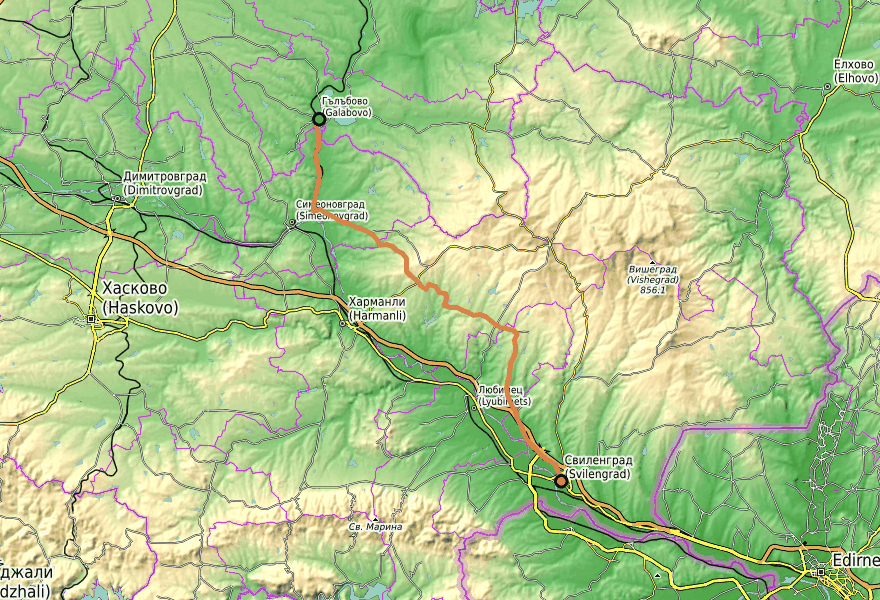
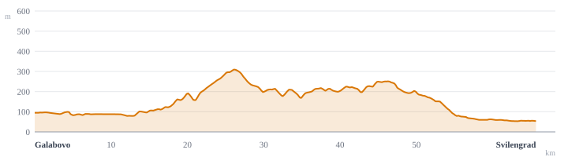

Leg 1 Saturday 23 May 2026
The lignite-to-Sinan-bridge day.


Leg 1 introduces you to Sakar by leaving its industrial neighbour. You start in Galabovo with the cooling towers and bucket-wheel excavators of the Maritsa-Iztok lignite complex visible to the north, and you pedal south, watching that landscape recede in the mirror. The first twenty kilometres are agricultural plain — sunflower, wheat, the last remnants of Bulgaria's tobacco belt — through small Simeonovgrad-municipality villages. Around km 24, near Ovcharovo, the only proper climb of the day lifts you onto the Sakar shoulder: an oak-savanna pasture mosaic on granite, where lone ancient oaks dot the grassland and Eastern Imperial Eagles still nest. The middle of the leg passes through the near-deserted village of Kolarovo and drops east to cross the Maritsa. South of the river the route runs through Oryahovo, Georgi Dobrevo, Momkovo — quiet, half-emptied villages — and arrives in Svilengrad over Mimar Sinan's first major commission, built in 1529 for the vizier whose name the town once carried. Edirne is twenty kilometres east; the Greek border is across the river.
The largest energy complex in southeast Europe sits a few kilometres north of Galabovo: three lignite-fired power stations plus open-pit mines covering about 240 km². Unit Maritsa-Iztok-2 is the biggest thermal plant in the Balkans and generates roughly 30% of Bulgaria's electricity — and is the country's single largest CO₂ source. From the start of the leg you'll see cooling-tower plumes and the giant bucket-wheel excavators to the north and north-west. The trip's framing — out of a coal landscape, through a granite-and-oak landscape, into a Mediterranean-edge border town — starts here.
Galabovo (about 10,000 residents) sits on the Sazliyka, a left tributary of the Maritsa. A 20th-century railway-and-coal town that grew around the lignite complex; the surrounding plain has been continuously inhabited since antiquity. The Roman-era Diagonal Road (Via Militaris) crossed the Maritsa basin not far south of here — you'll cross its rough trajectory mid-leg. Cafés on the central square open from around 07:00.
The leg's only proper climb. From here the landscape switches from agricultural plain to oak-savanna and pasture — the Sakar shoulder. Lone oaks scattered through grazed grassland are exactly the nest substrate for Eastern Imperial Eagles, of which Sakar holds about a third of Bulgaria's national population.
About six year-round residents. A village that has shrunk almost to nothing, surrounded by working land. The Sakar is one of Bulgaria's depopulation hotspots — border-zone plus mountain — and Kolarovo is its first visible chapter on the trip. Sakartsi (population 11) and Vladimirovo (33) come on Leg 3; this one is the warm-up.
The route turns east here and crosses the Maritsa, descending from the Sakar foothills to the river plain. The bridge is east of Biser village. The Maritsa is the Bulgarian–Greek border for about 110 km starting downstream of Svilengrad — a 20th-century geopolitical fact you can't see from the bridge but worth knowing.
A very specific kind of megalithic afterlife. The original Iron Age dolmens here were quarried for stone over the centuries, and entrance slabs of dismantled dolmens were re-used as covers for village water wells. Not a tourist site — an archaeologist's footnote — but if you slow down through the village and look at older wells (often with a hand pump or a stone collar), some of those slabs are literally Bronze/Iron Age dolmen entrances repurposed three thousand years later.
The day's headline arrival. The Old Bridge over the Maritsa is 295 m long and 6 m wide, with 20–21 stone arches — and it is Mimar Sinan's first major commission, built in 1529 for the Grand Vizier Çoban Mustafa Pasha as part of a full vakif complex (caravanserai, mosque, bazaar, hamam) that gave the town its Ottoman name, Cisr-i Mustafa Paşa — Bridge of Mustafa Pasha. A 1766 flood took out arches; rebuilt 1809; the retreating Ottoman army tried and failed to blow it up in November 1912. Recently restored. Sinan's masterpiece, the Selimiye Mosque, is twenty kilometres east in Edirne — the same architect, fifty years later, at the height of his powers.
Built in 1874 by the Chemins de fer Orientaux as a node on the original Istanbul–Vienna line — the spine of the original Orient Express. The 1874 building still stands. Because of how the rails were laid, the station ended up across the Maritsa from town; when the river became the Bulgarian–Greek border in 1923, the station and its surroundings remained Turkish until the 1971 Edirne cut-off (an 80 km bypass) let Turkey reach Bulgaria without crossing Greece. Today Svilengrad is the last Bulgarian station before both the Turkish and Greek borders.
Pyasachevo, Troyan, Svirkovo (km 6–18): the first run of small Simeonovgrad-municipality villages, on the western edge of the Sakar foothills. Each has a church and a fountain; none has scheduled cafés you can count on. Treat as warmup with character to read off the rooftops — chimneys and electric poles carry stork nests in late May.
The Diagonal Road (Via Militaris): the main Roman artery from Singidunum (Belgrade) to Constantinople crossed this region. The road station Castra Rubra ("Red Fort") sat somewhere near modern Kolarovo / Izvorovo — precise location contested between several Sakar villages.
Georgi Dobrevo and Momkovo (km 54–60): half-emptied villages south of the Maritsa, with single-storey houses, walled yards, fig and walnut trees. Stork nests on poles. The eastern edge of the Sakar drops here toward the Maritsa.
Edirne, twenty kilometres east: one of the great Ottoman capitals — Selimiye, Üç Şerefeli, Eski Cami. You won't go there on this trip, but standing on the Old Bridge it's worth knowing that the river under your feet flowed through Edirne fifty kilometres upstream in 1529, and the same vizier who paid for your bridge is buried near Gebze. The local geography makes more sense with the border ignored.
The 1371 Battle of Maritsa (Chernomen): Ottoman victory fought near here that broke the Serbian noble alliance and set up Edirne as the Ottoman capital from 1369. The Sakar has been a transit corridor for the better part of two millennia; the modern border is the most recent layer.
Late May on this leg is white-stork weather: chicks are hatched and growing in nests on rooftops, chimneys and poles, and adults shuttle constantly to and from wet meadows — bill-clattering at the nest is a sound you'll hear without trying. Cuckoos and golden orioles call from poplar lines along the Sazliyka and the Maritsa; turtle doves coo from oak edges. In the pasture south of Ovcharovo, slow down and watch the lone oaks: Imperial Eagle pairs perch motionless on the highest dead branches, and Long-legged Buzzards hunt over the open grassland. Bee-eaters are back from Africa by now and colour-band the telephone lines. On the ground, late spring orchids — green-winged orchid, early Ophrys — linger in unmown pasture corners; poppies are at peak in field margins. At the Maritsa bridge, look for kingfisher and grey heron in the reeds.
Walk back across the Mustafa Pasha bridge at Svilengrad. Don't just ride over it. Stop on the south bank and look at it. You're standing on a 16th-century apprentice piece by Mimar Sinan — the architect who later defined Ottoman classical architecture in Edirne and Istanbul.
km 0–18 (Galabovo → Svirkovo): agricultural plain. Tobacco, sunflower, wheat. Villages with churches but nothing nationally important. The Maritsa-Iztok complex to the north is the only "interesting" visual feature.
km 42–60 (Oryahovo → Momkovo): half-emptied villages, vineyards and oak patches. Mostly "ride and look at storks." Don't expect cafés or services until Svilengrad.